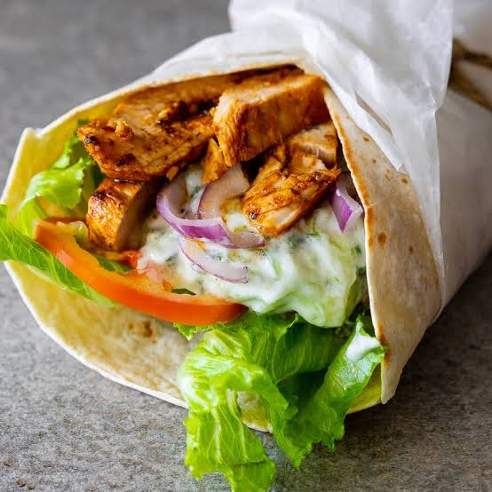

Chicken Wrap

Description
A quick, healthy, and highly customizable meal.
Perfect for a busy weekday lunch or a light dinner.
Ingredients
- Large flour tortillas (or flatbreads)
- Cooked chicken breast (grilled or shredded)
- Lettuce or mixed greens
- Sliced tomatoes and cucumbers
- Shredded cheddar or mozzarella cheese
- Mayonnaise, garlic sauce, or honey mustard dressing
Steps:
- Warm the flour tortilla slightly in a dry pan to make it soft and easy to roll.
- Spread a thin layer of your chosen dressing across the center of the tortilla.
- Lay down a bed of lettuce, then layer on the sliced tomatoes, cucumbers, and chicken.
- Top with a sprinkle of shredded cheese.
- Tuck in the bottom and sides of the tortilla, roll it up tightly, and slice it in half to serve.
Homepage
Click here to check out my delicious Smoky Jollof recipe or Here for a quick chocolate yoghurt recipe